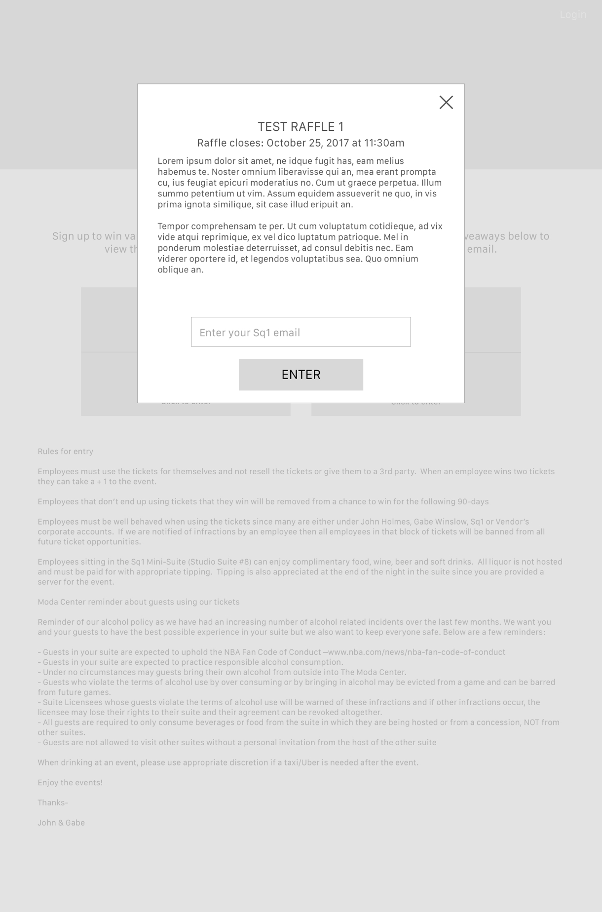
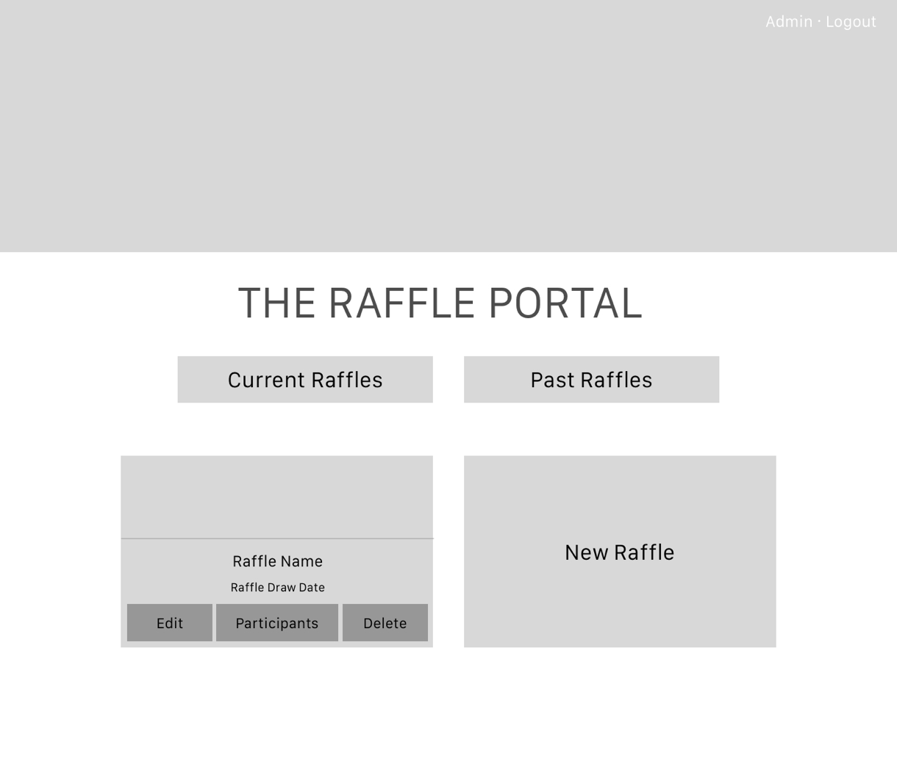
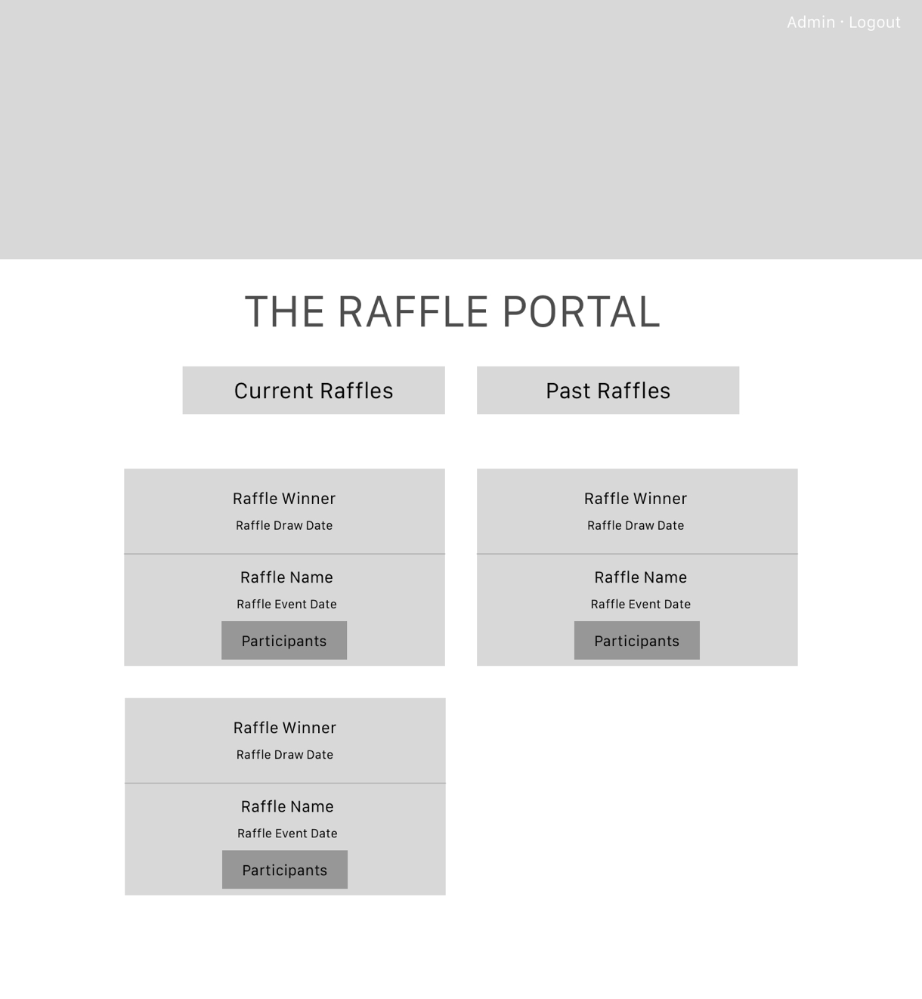
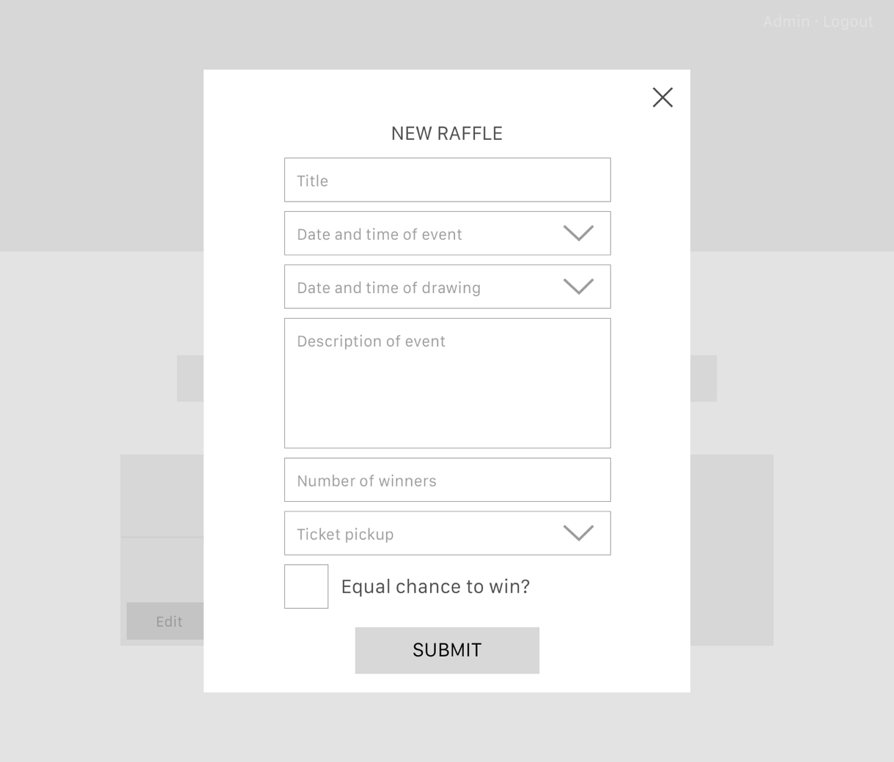
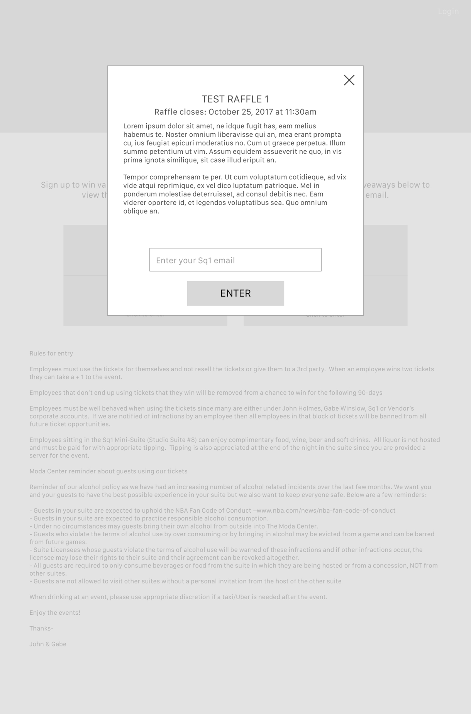
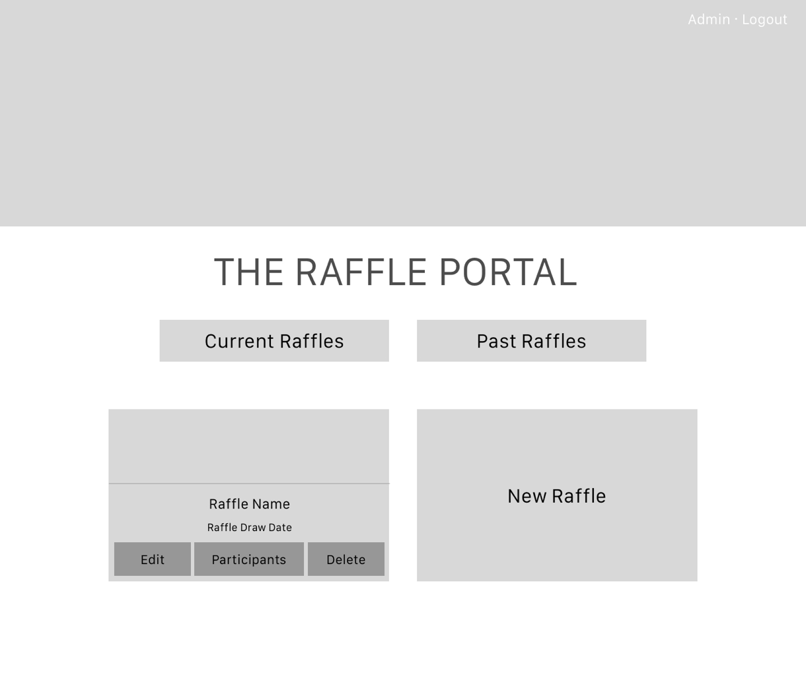
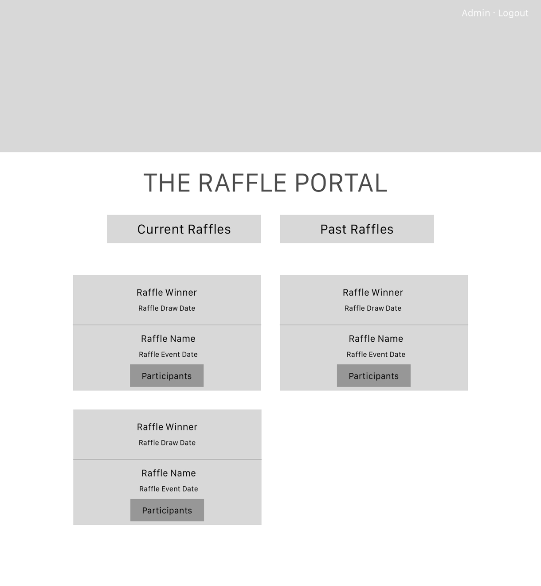
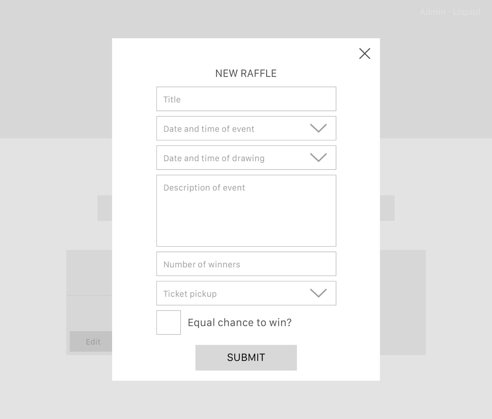

Overview
The senior leadership at Sq1 often have tickets to give away to employees for events happening around the city. In order to make these giveaways as fair as possible, they introduced a raffle tool into the company's intranet. Any time tickets were available, employees could visit the raffle site, enter their name, and have the chance of being randomly selected to win the tickets. The UI for the tool they were using was looking a bit dated and there were a number of UX updates they were hoping to incorporate. I was asked to redesign the UI for the raffle system while incorporating the requested functionality improvements.
Problem
A dated UI and occasionally confusing UX coupled with a lack of needed administrative options left Sq1's internal raffle ticketing tool in need of an update. It was requested that I maintain the overall look and feel of the original tool, while simply giving it a facelift to bring it up-to-date with current UI design trends.
Solution
I updated the UX and UI for Sq1's internal raffle system by rearranging the tool's information architecture while incorporating slight gradients, large, simple iconography, and tastefully integrating drop shadows into its design.
Technologies Used
- Sketch
- InVision

 






